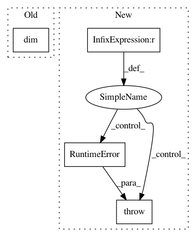

c4b2d405f87cb13678222124d35dc3e55a04612e,gpytorch/models/deep_gps/deep_gp.py,AbstractDeepGPHiddenLayer,__call__,#AbstractDeepGPHiddenLayer#Any#,47
Before Change
// Assume new input entirely
inputs = inputs.unsqueeze(0)
inputs = inputs.expand(self.output_dims, inputs.size(-2), self.input_dims)
elif inputs.dim() == 3:
// Assume batch dim is samples, not output_dim
inputs = inputs.unsqueeze(0)
inputs = inputs.expand(self.output_dims, inputs.size(1), inputs.size(-2), self.input_dims)
After Change
will just work, and return a tensor of size `s x n x h2`, where `h2` is the output dimensionality of
hidden_gp2. In this way, hidden GP layers are easily composable.
if inputs.size(-1) != self.input_dims:
raise RuntimeError(
f"Input shape did not match self.input_dims. Got total feature dims [{x.size(-1)}],"
f" expected [{self.input_dims}]"
)
inputs = self._reshape_input(inputs)
if inputs.dim() == 4:
num_samples = inputs.size(-3)
In pattern: SUPERPATTERN
Frequency: 3
Non-data size: 4
Instances
Project Name: cornellius-gp/gpytorch
Commit Name: c4b2d405f87cb13678222124d35dc3e55a04612e
Time: 2019-07-16
Author: jake.gardner@uber.com
File Name: gpytorch/models/deep_gps/deep_gp.py
Class Name: AbstractDeepGPHiddenLayer
Method Name: __call__
Project Name: cornellius-gp/gpytorch
Commit Name: c517e0b8b34a85b8142b4669c152b6e62c02d8e2
Time: 2019-03-18
Author: gpleiss@gmail.com
File Name: gpytorch/lazy/lazy_tensor.py
Class Name: LazyTensor
Method Name: expand
Project Name: cornellius-gp/gpytorch
Commit Name: 979b8c9efa551e8c948a4aca145367a2d87ac8d6
Time: 2019-02-26
Author: balandat@fb.com
File Name: gpytorch/distributions/multitask_multivariate_normal.py
Class Name: MultitaskMultivariateNormal
Method Name: rsample